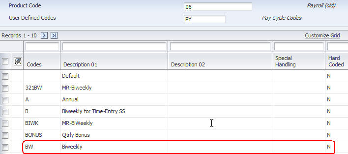
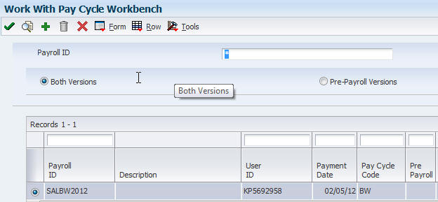
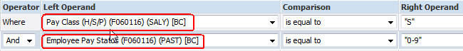
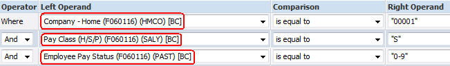
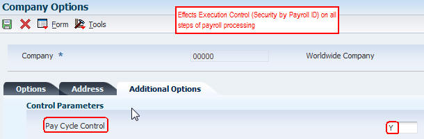
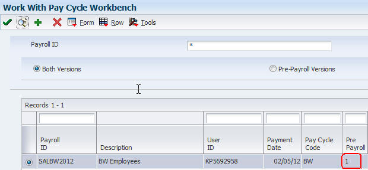
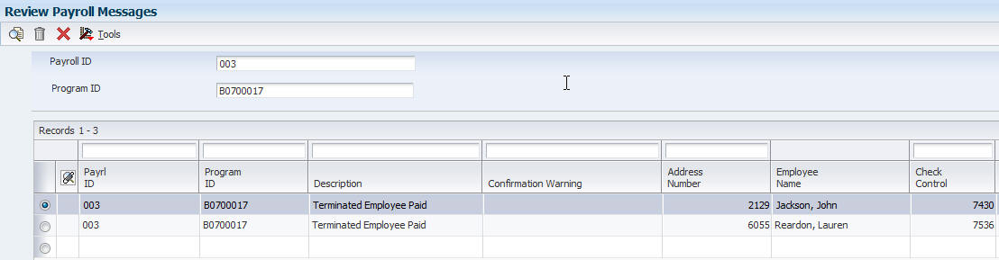

Explanation of pre-payroll processing and various scenarios that may exist.
General Information
Integrated payroll solutions for the United States, Canada, Australia, and New Zealand support an international organization's central human resources department by providing localized compliance management with government taxation and reporting requirements.
Scope
Content is intended for users with any level of expertise in the product.
Details
General Information
Integrated payroll solutions for the United States, Canada, Australia, and New Zealand support an international organization's central human resources department by providing localized compliance management with government taxation and reporting requirements.
Payroll Cycle Workbench
Before processing payroll information, the payroll cycle workbench must be set up to process information according to the rules and policies of the organization. The dates that make up each pay cycle must be defined, and the criteria that are used to select employees for pay cycle processing must also be defined. In addition, the reports that will be generated during pay cycle processing must be defined. Finally, due to the sensitive nature of payroll information, security on the payroll cycle workbench must be set up using pay cycle control parameters.
Master Pay Cycles
Set up user-defined code (UDC) 06/PY to define the names of the pay cycles.  To define the dates for each payroll cycle in a year, the user must set up master pay cycles. The system uses these dates during payroll cycle processing. When the user processes pre-payroll, the system retrieves the dates that were entered in the master pay cycle. Setting up master pay cycles minimizes the risk of data entry errors during pre-payroll because certain values have already been entered. Within a master pay cycle, the length of the pay periods must be defined and the corresponding payment dates.
Note: Dates can be overridden in the Payroll Parameters Form. However, it is recommended to select the dates from the Master Pay Cycle, then if necessary changes can be made to the payment date, etc. There is some data from the Master Pay Cycle that is passed into the F07210 (Pay Cycle Parameters File) that is not on the P07200 application, therefore if the dates are not pulled from the Master Pay Cycle it could impact DBA calculations.
Master pay cycles enable the user to define:
Pay period ending dates
Identifiers for the pay period
Payment dates for each pay period
Withholding period indicators to determine the calculation of DBAs
Integrity period numbers for storing payroll history
Standard hours per pay period for autopaySet up a master pay cycle for the current year to run payroll cycles for the current year. A new master pay cycle should be added for each year. (Copy functionality is available.)
Important! Do not set up additional pay periods at the end of a master pay cycle to use for year-end adjustments. Quantum tax calculations are based on the number of pay periods in the master pay cycle. Adding additional pay periods can cause tax amounts for the entire year to be calculated incorrectly. For example, a semimonthly master pay cycle should contain only 24 pay periods. If additional payroll cycles are necessary at the end of the year, reuse pay period 24 as many times as necessary. .
Master Pay Cycles should only contain pay period end and payment dates in the year for that cycle. Entering a year for example in the pay period end date for a year in the future may cause any step of the payroll process to not complete. For example, pre-payroll may complete, the Journals may not.
Creating a Payroll ID
From the Payroll Workbench (P07210) click the (Add) button to create a Payroll ID  The payroll cycle is controlled by a payroll ID. Before processing pre-payroll, enter a payroll ID that is used to specify the employees to be paid. The same payroll ID is used for all of the steps of a payroll cycle. Different payroll IDs can be used to simultaneously process multiple payroll cycles. A new payroll ID is needed when processing payroll for a selected group of employees for the first time. A new payroll ID can be created for processing regular payments, interim payments, or both. When creating a new payroll ID, enter the pay period information needs to be entered before the system can process the payroll cycle.
Pre-Payroll Processing
Data Selection for the (R07200) Pre-Payroll UBE Version
A program version of Pre-Payroll (R07200) must be assigned to the payroll ID. This program version is used to select the employees to include in that payroll cycle. If no suitable program version exists, a new program version can be added when you create the new payroll ID.
Note. Verify that the program version that is used is not already assigned to another payroll ID. Each version should be assigned to only one payroll ID. Also, if using multiple versions of pre-payroll, use only one of the versions that you created for that payroll ID when setting up the payroll ID. However, this version must be used when setting up processing information for multiple versions.
When entering the data selection for a version of the pre-payroll process, observe these guidelines:
All of the employees selected must have the same country code.
When adding a new pre-payroll program version, do not include an employee in more than one payroll cycle. If done, the system includes the employee in only the first payroll ID processed.
All employees in the same payroll ID must have the same pay frequency.
Including pay status in the data selection is recommended.
If you are processing multiple versions of pre-payroll for a single payroll ID, make sure that employees are included in only one of the versions. Use ranges of address book numbers to evenly divide employees among the multiple versions that have been created.
To include terminated employees in pre-payroll processing, include the terminated pay status in the data selection for the pre-payroll program version. During the pre-payroll process, the system selects only those terminated employees whose termination dates are on or after the beginning date of the pay period.
Different scenarios that might be considered when creating payroll versions: Data select on company and/or business unit Data select on pay class (salaried employees in one version and hourly in a different version)  Data select on company and pay class  Data select on a range of employees.
There are many selections and combinations of selections that can be used. The above screenshots are just examples of some of the most used scenarios. It is always important to include the data selection for Employee Pay Status as most times only active employees are to be paid.
Note: Submit Specifications Only must be performed for UBEs and their versions that are launched (called) from a row exit, function, or parent UBE. For these called UBEs the specifications need to be installed at the server with Submit Version Spec from BV or doing a server package change. Also if a copy is made of the version or a change is made to the version, specifications only must again be submitted.
Payroll Cycle Execution Control
Payroll cycle Execution Control parameters is setup to define which users have authority to process each step of the payroll cycle and which users have authority to reset each step. Typically, the system administrator for the system is responsible for setting up payroll cycle control parameters. If no payroll cycle control parameters are set up, the person who initiates a payroll cycle has authority to process and reset each step. No other users have this authority. Payroll cycle control parameters are specific to a payroll ID. Therefore, users who have authority to process payroll cycles for a particular group of employees can be prohibited from processing payroll cycles for other groups. For example, the organization might limit certain payroll clerks from processing the payroll ID that includes the organization's executives.
Note: If the Pay Cycle Control field (CCTF) in Company Setup is set to N, the user may receive an error Employee is not execution control, even if that user is listed in execution control. This occurs because Execution Control is not being used, so only the person who runs the first pre-payroll step is required to run all steps of the cycle.
Change the setting to Y to use execution control. Other setup to check when getting this error and other similar error related to execution control are:
Confirm that the Execution Control Parameters are defined correctly. The user processing the steps must be included in the P072091 (Execution Control Parameters).
Confirm that additional security has not been defined for a specific USER ID. Your system administrator may need to be contacted for additional assistance with security.
Submitting Pre-payroll
After creating the payroll id (which includes creating the version and submitting the specs) the payroll is ready to be submitted.
Access the Work With Pay Cycle Workbench form. To process pre-payroll: 1. Select a record in the detail area to run pre-payroll without changing any of the pre-payroll parameters. Then select Pre-Payroll from the Row menu, and then select Pre-Payroll from the Submit menu. Otherwise, go to step 3. 2. Click Select if you need to change any of the pre-payroll parameters. 3. Make any necessary revisions on the Pre-Payroll Processing form. 4. Select the Submit Pre-Payroll option, and then click OK. Typically, one or more reports have been previously set up to automatically print during pre-payroll processing. Before you print payments, you should review these reports to verify the accuracy of the payroll information. If the system encounters any errors when you process pre-payroll, it displays a message to notify you that the process finished with errors.
During Pre-Payroll processing an Awill appear in the grid of the Pay Cycle Workbench in the column entitled Pre-Payroll. When the payroll has completed a 1 will appear in the column.

Occasionally, the A will disappear but the payroll continues to run. If this occurs, try the following:
Create a new Pre-Payroll Driver UBE (R07200) version.
For releases 8.0 and above process Submit Specifications Only for the new version.
Note: If processing on an AS400 machine, and the R07200 (Pre-Payroll Driver) does not kickoff, (UBE is not showing in the job queue), go to the Work with Job Queues application (P986130) and verify that QBATCH is defined as the job queue.
Messages and Errors
When processing pre-payroll, the system generates messages to warn of certain conditions. When errors occur during pre-payroll, the system displays messages in the Employee Work Center to notify the user that the errors occurred. Messages should be reviewed in the Employee Work Center before continuing to process the payroll cycle.
The system generates these general categories of payroll error messages in the Employee Work Center:
Location of Error
Category
Description
Employee Work Center
Messages about errors that cause pre-payroll to terminate
DBA Control Table errors and Quantum errors must be corrected before rerunning pre-payroll
Payroll Message Review
Messages that only affect one employee record
These errors do not cause pre-payroll to terminate. However, the system does not process the affected employee record. You can use the Pre-Payroll Message Center to review more detailed information about these messages.
Employee Work Center

Review Payroll Messages
. Example of payroll id that has no payroll message errors. Example of a payroll that has payroll message errors:
Shown below are some of the messages the user might encounter when review Payroll Messages.
Error Message
Explanation
Autopay Timecard in Error
The master business function for time entry encountered an error when it created an autopay timecard for an employee.
Employee Locked to Another Payroll
An employee record that is included in pre-payroll processing is locked in another payroll cycle. To remove the lock, process the other payroll cycle through final update. If the employee's record is locked because of an error, reset the employee's record.
Employee Has Gross-to-Net Error
When the system calculated the payment for an employee, the gross wages minus the taxes and deductions did not equal the net wages. Use the Employee Payment Review form or the Payroll Register report to review detailed information about the error.
Employee Has Deductions Not Taken
When the system calculated the payment for an employee, insufficient gross wages were available to pay for all of the employee's deductions. Therefore, the system reduced or omitted one or more of the deductions.
Employee Has Deductions in Arrear
When the system calculated the payment for an employee, there were insufficient gross wages to pay for all of the employee's deductions. Therefore, the system placed in arrears one or more of the deductions
Employee Has Unprocessed Interim Payments
The system encountered an interim payment for an employee that has not been processed. The Interim Calculations program might have aborted during processing. To process the interim payment, resubmit the interim payment for processing.
Job Does Not Qualify
This error means that one of the following conditions occurred: -The pay start date entered for the employee is after the pay period ending date for the payroll cycle. -A pay stop date has been entered for the employee and this date is before the beginning date of the payroll cycle.
Terminated Employee Has Been Paid
One of the employees who is included in the payroll cycle has a pay status of Terminated. In some cases, this is a valid condition. Review the employee's record to determine whether the employee is supposed to receive a payment.
DBA Method (F07901) Not Found
A DBA attempted to calculate using a table method that does not exist in the F07901 Work With Pre-Payroll DBA Calculation Control File
Payroll error messages are stored in the Pre-Payroll Error File table (F07355). Periodically, the user can purge the records in this table by using the purge function of the Pre-Payroll Message Center program (P07355). The user can specify which records to purge by a payroll ID, a range of dates, or both.
Payroll Reset Process
For multiple reasons, a payroll may need to be reset and rerun. When this is necessary, highlight the payroll id in the grid on the Pay Cycle Workbench and use the Pre-Payroll|Reset Payroll row exit.  The user who originates a pre-payroll has authorization to perform a reset. Other users must be authorized to perform a reset. When you set up the system, you can grant up to five users the authority to process the steps in a payroll cycle and to perform a reset. If you inadvertently include in a payroll cycle an employee who should not get paid in that payroll cycle, you must reset the record for the individual employee. In addition, you must reset the payroll ID when you:
Process pre-payroll for the wrong employees.
Omit a group of employees who should have been included in pre-payroll processing.
Change the setup of a DBA that affects one or more employees in the payroll cycle.
When you perform a reset, the system updates the status code for the step in the payroll cycle that is affected by the reset. You can also manually reset status codes when you need to rerun a step that ended abnormally or that has a scheduling lock. A step might end abnormally when a machine or power failure occurs. A scheduling lock occurs when two people attempt to run the step at the same time. Most details of resetting the payroll are available in the JD Edwards EnterpriseOne Payroll Implementation Guide for the applicable release.
The Reset program (R07300) looks for the employees locked to the Payroll ID. 1. The system goes to Employee Lockout Code File (F07300) and uses alias YBAN8, YBPAYD, YBUSR & YBGLCK, to identify the employees to reset. 2. In the Payment File (F07350) the system finds the Check Control Number (alias Y0CKCN) that is related to the information in Step #1. 3. With this information the system then goes to Payment Distribution File (F07351), Stub Information File (F07352), and Tax Detail File (F07353) and clears the records matching the Check Control Number. 4. The system then checks time entry. The system only clears the records created with auto pay for salary employees. All the records manually entered through Time Entry will remain after the reset. The process looks at the Employee Transaction Detail File (F06116) for the Check Control Number that matches the Payroll ID. 5. The reset payroll process also clears two files for DBAs (Deductions, Benefits, Accruals): the Deduction/Benefit/Accrual Ledger File (F0709) and the DBA Period Control File (F0705). 6. Pay Cycle Workbench P07210 and the Pay cycle Parameters File (F07210) get updated, as well as, the Reset Payroll Parameters (P07216) is updated (Pre-Payroll Processing, Payment, Journal Entries, and Reports Only). 7. If Journals were processed prior to the reset; the reset will clear the following six tables:
EnterpriseOne Table Name
Table
WF Payroll Journal (Detail) File
F05290
Payroll Journal Compressed File
F063951
Burden Distribution File
F07241
Payroll Account Payable Detail File
F07490
Payroll Account Payable Summary File
F07491
Payroll Account Payable Control File
F07492
The batch number, alias ICU, is used to match the criteria to clear the records.
Note: When an employee is pulled into a Regular Payroll or Interims Only payroll, the system writes a record to the F07300 with a Group Lockout Code (GLCK) = 1. When the payroll is reset or finalized the record is cleared.
Interim Calculation ID
When an interim is created, the system writes a record to the F07300 with the GLCK = blank. If the interim is deleted (without the interim pulling into final update), the record clears. If an interim is processed through payroll to history, then the payroll ID remains in the F07300 and GLCK = blank.
Miscellaneous Reset Information
If the payroll ID is deleted from the P07210 it is possible that there may still be records in the F07300. These can be all types of Payroll ID's. These records can only be deleted using Access or SQL.
Note: Occasionally when resetting the payroll id, the R07300 (Batch Application Reset Payroll - Full or by Employee) completes, but the payroll id and the employees remain locked. If this happens, using databrowser or UTB, verify if the table F75Z0009 (New Zealand Tax Detail Work File) exists. If this table does not exist, generate the table in OMW. While this table is the New Zealand Tax Detail table, the R07300 program runs over this table regardless of the country on the payroll id.
Miscellaneous FAQ's
Question 1: Why is an employee with a pay status 9 and no termination date not being shown with an error message in the Review Messages form?
Answer 1: Pay Status 9 is not a terminated Pay Status but is considered an active Pay Status. Since there is not a termination date the payroll does not designate this employee as terminated.
Question 2: Why does the Pre-Payroll (R07200) not update the Employee Master Information (F060116) YAPYDT (Date - Pay Cycle Processed) as it did in JD Edwards World?
Answer 2: PYDT (Date - Pay Cycle Processed) is a carry-over field from JD Edwards World. Although this field may appear on a few HCM applications, it is not populated during the EnterpriseOne Payroll process (cycle). In EnterpriseOne, the Employee Lockout (F07300) is the most comparable table that stores this type of information (Date - Pay Cycle Processed) as it contains a record by Payroll ID for each employee locked to a specific Payroll. Among the F07300 audit fields is "Date Updated", which stores the date on which Pre-Payroll (R07200) was run.
Question 3: What would cause an 'A' 'to be stuck in YDCHKS field on the payroll?
Answer 3: A corrupt version can cause the YDCHKS field to not update to a 1 status. To resolve create a new version for print payments, submit the version specs to the server and attach the newly created version to the print payment setup.
Question 4: What Employee Master Changes Trigger a Changes Only Payroll - Fields Required?
Answer 4: In attempt to determine a comprehensive list of Employee Master (F060116)fields, I have reviewed the Employee Master Business Function (B0500575), which is called when changes are made via P0801 or related employee related applications. When an employee has been locked to a Payroll ID, an Employee Lockout (F07300) record is created for that employee and Payroll ID combination.
When one or more Employee Master (F060116) values are changed for an employee locked to a payroll, a "Changes Only" Payroll is triggered for that employee. Specifically, the "UpdatePayrollLockoutCode" (N0500020) NER is called to update the "Update Flag" (F07300 YBUFLG) column with a '1', which signifies that this employee has been flagged for a "Changes Only" payroll. In addition, the Pay Cycle Parameters (F07210) record's "PayrollStatusCode01" (F07210 YDYST1) with a '1', which then enables the "Changes Only" row exit on the "Work With Pay Cycle Workbench" (P07210) form. When selecting the "Changes Only" row exit and choosing "Submit", the Changes Only (R07200C) UBE is launched.
The Changes Only (R07200C) UBE, which (its "Driver" section) is based over a joined business view including the F07300 and F060116 tables, has code - hard-coded data selection - to only process those employees that have a '1' in the "Update Flag" (F07300 YBUFLG) column of their Employee Lockout (F07300) record. Each employee processed is first reset (i.e., Payroll Reset - B0700022 is run for that employee to first clear all Pre-Payroll workfile records) prior to being reprocessed to determine the gross to net calculation. Note: The reason the employee is reset is because the changes to the employee master fields may impact the gross to net calculation.
In reviewing the code in the Employee Master MBF (B0500575), although not testing each field, the following Employee Master (F060116) changes to an employee locked to a payroll will (potentially....because there may be other conditions about the F060116 record that will cause it not to trigger) trigger a "Changes Only" payroll:
SALY - Pay Class (H/S/P) PHRT - Hourly Rate SAL - Salary JBCD - Job Type JBST - Job Step UN - Union Code HMCU - Home Business Unit POS - Position HMCO - Home Company
MCU - Security Business Unit
DSI - Original Hire Date DST - Date Started PFRQ - Pay Frequency MAIL - Check Route Code PSDT - Date Pay Starts TARR - Tax Area Residence TARA - Tax Area Work MSTX - Marital Status Tax WSPS - Residency Status NS - Work Tax Area Source FICM - Tax Calc Method EIC - Earned Income Credit Status SUI - Source of SUI Reporting WCMP - Workers Comp Insurance Code WET - Workers Comp Sub Class RCCD - Record Type PBRT - Distribution Rate LF - Labor Distribution Multiplier ADPN - PreNote Code NMAX - Maximum Net Pay


 .
.